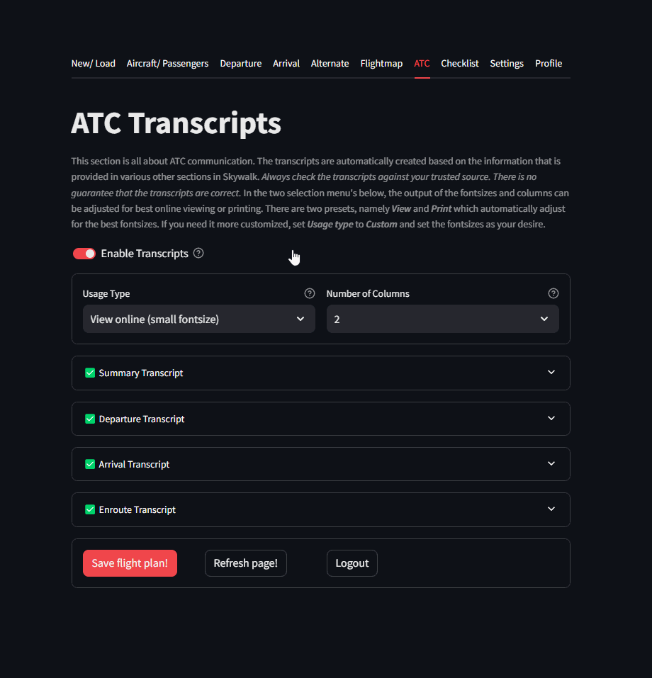

ATC Transcripts
Air Traffic Control (ATC) transcripts are essential for communications between pilots and air traffic controllers. The transcripts provide a detailed account of the instructions, clearances, and information exchanged to ensure the safe and efficient management of air traffic.
The primary purpose of ATC transcripts is to maintain situational awareness and coordination between the aircraft and ground-based controllers.
In training and evaluation, ATC transcripts serve as valuable resources for improving communication protocols, enhancing pilot-controller interactions, and fostering a culture of safety and continuous improvement. By documenting every exchange, ATC transcripts contribute to the robustness and reliability of the aviation system, ultimately ensuring the safety of air travel.
Note
SkyWalk auto-generates transcripts based on the information that is provided across the various sections.
The Summary Transcripts is a condensed summary of Departure/ Arrival and Enroute. The transcripts can be customized with two presets namely View and Print which automatically adjust for the best fontsizes. It is recommend to use the Print for printing and View for online reading. If you need it more customized, set Usage type to Custom and set the fontsizes as your desire.
Warning
ATC transcripts can show some variation between countries and aerodromes due to differences in local regulations, procedures, and communication practices.
While the core elements of ATC communications remain consistent, specific phraseology, accents, and procedural nuances can reflect regional variations.
These differences underscore the importance of pilots and controllers being familiar with the specific protocols of the airspace they operate in, ensuring effective and clear communication across diverse aviation environments.
Transcript Examples
The following transcripts are auto-generated in SkyWalk.
Summary
Depature
Arrival
Enroute
 |